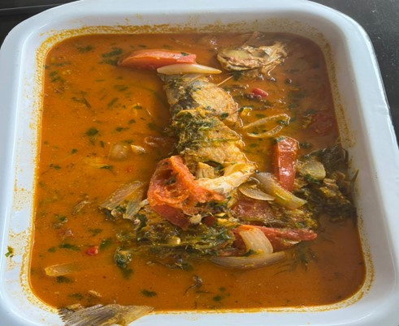
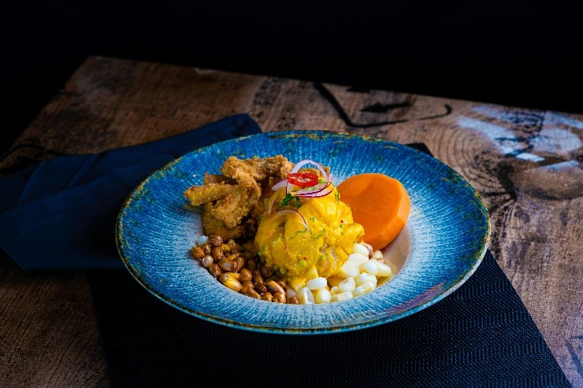

Jungle Cuisine
Discover the unique and exotic flavors of Peru’s Amazon jungle region, where every dish reflects the biodiversity and cultural richness of the rainforest.
Popular Foods in the Jungle

- Pescado Frito
- This staple dish is often made from freshly caught river fish like paiche or dorado, abundant in the Amazon rivers. The fish is seasoned with salt, garlic, and local spices, then fried to perfection. It’s commonly served with starchy sides such as yuca (cassava) or rice, providing a hearty meal. In some variations, it’s paired with a spicy dipping sauce made from aji peppers, adding an extra bit of flavor.

- Sudado
- Sudado is a fish stew that showcases the region’s fresh ingredients and bold flavors. The base is made with onions, tomatoes, garlic, and aji peppers, creating a savory and slightly spicy broth. What makes this dish unique is the addition of lime juice, which gives the stew a tangy flavor. The fish is gently boiled to retain its natural tenderness and flavor. Sides like yuca, sweet potatoes, or rice complete the meal, making it both comforting and nutritious.

- Tacacho
- Tacacho is a beloved jungle dish made by mashing green plantains with lard until smooth and flavorful. It’s traditionally served alongside fried pork, crispy bacon, or even fried octopus. Sides like sweet potatoes or smoked sausage often accompany it. Tacacho is a staple in the Amazon and is especially popular at family gatherings or celebrations.